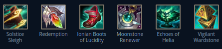

Superior, Bronze player, zilean, support, early season 14, opinion.
Zamysł tego zestawu jest taki, aby ult leczył jak najwięcej i przy okazji inne rzeczy tu są.
- BUILD 
- Sanki albo ten co daje redukcje obrażeń trzeba wziac, bo daje przeżywalność
- Redemption daje nam dużo ability haste'a (zilean lubi dużo tego AH) i najwięcej heal & shield powera, ktory wiadomo jest pod ulta. Aktywka też dużo leczy.
- Butki AH, bo zilean lubi tego dużo (co najmniej 50, a najlepiej 100).
- Moonstone renever, bo jego pasywa daje 40% z heala na innego typa, więc jak kogoś revasz to inny też troche tego hp dostaje.
- Helia zwieksza każdy heal o ilość stacków, które sie dostaje za zadawawnie obrażeń przeciwnikowi. Ale jak to wykorzystamy jak ult zileana healuje tylko raz na jakis czas? Przedstawiam Font of Life!
- FONT OF LIFE
- RUNY
- GUARDIAN, kurde guardian daje ci taką tankowność, że mozesz sobie chodzić tak o bo tak
- BONE PLATING w odpowiedniej sytuacji daje ci OGROMNĄ tankowność. OCZYWISCIE BIERZESZ SECOND WIND GDY TRZEBA, TA?
- Revitalize daje heal & shield powera na heale
- Presence of Mind upoważnia cie do rzucania podwojnych bomb do poke'owania
- Tenacity jest spoko
- AH (zilean to lubi)
- Jakies randomowe runki pozniej ale tenacity jest spoko
- SKILL ORDER
- q->w->e myśle że oczywiste na pierwszych 3 lewelach
- Lewelowanie q do lewela 3 umożliwia zadawanie jakichkolwiek obrażeń, by przeciwnicy nie mogli po prostu nas ignorować
- Ult kiedy możliwe
- E lewel 4 to nasz cel, bo lvl 5 to marnotractwo
- W max bo nigdy tego skilla za dużo
- Później róbta co chceta
- Dlaczego E lvl 4, a nie 5 ?

Font of Life healuje kazdego sojusznika, który zautoatakuje tego samego przeciwnika co ty spowolniłeś lub unieruchomiłeś. Dzięki czemu zilean ma dostęp do szybkiego i łatwego heal'a na proc'owanie różnych rzeczy.
Ze względu, że istnieje coś takiego jak speed soft cap to roznica jest mniejsza niż 14 punktów procentowych.
Mianowicie: ulepszenie 4->5 (dla osoby, która bazowo ma 380 ms) zwieksza ms 581.5->608.1 albo spowalnia 138.5->111.9.
Nie jest to moim zdaniem różnica zmieniająca cokolwiek.